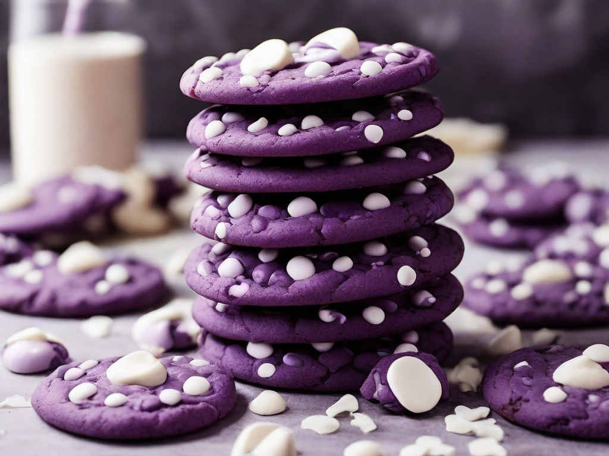

Odin Recipes
Blueberry Cookies recipe

The best ever blueberry cookies get their vibrant
color and fruity flavor from frozen wild blueberries.
These cakey cookies, super cute and studded with
white chocolate chips, are also delicious.
Ingredients
- 1/2 cup frozen wild blueberries
- 1/2 cup unsalted butter, softened
- 1/2 cup white sugar
- 1/4 teaspoon salt
- 1 tablespoon freshly grated lemon zest
- 1 tablespoon fresh lemon juice
- 1/2 teaspoon vanilla extract
- 1 cup plus 2 tablespoons all-purpose flour
- 1 tablespoon cornstarch
- 1/2 teaspoon baking powder
- 1/2 cup white chocolate chips
Steps
- Place frozen blueberries in a microwave-safe bowl. Microwave until blueberries are thawed, about 1 minute. Do not drain.
- Beat butter, sugar, and salt together in a large bowl with an electric mixer until light and fluffy, about 3 minutes. Add in blueberries and their juices, lemon zest, lemon juice, and vanilla and beat on high speed until fairly smooth, about 5 minutes. Mixture will look curdled initially, but will emulsify and smooth out after several minutes of mixing on high speed.
- Mix in flour, cornstarch and baking powder on low speed until combined. Stir in white chocolate chips.
- Cover cookie dough and refrigerate until chilled, 30 to 60 minutes.
- Preheat the oven to 350 degrees F (180 degrees C). Line 2 baking sheets with parchment.
- Scoop out 1 1/2 tablespoon-sized balls of dough; place 1 1/2 inches apart on the prepared baking sheets. Use damp hands to flatten the cookies slightly.
- Bake in the preheated oven until cookies just begin to turn brown on the edges, 10 to 14 minutes. Cool cookies on the pan for 5 minutes, then remove to a wire rack to cool completely.
Go back home: Odin Recipes
or check this other recipe: Lavash pizza recipe